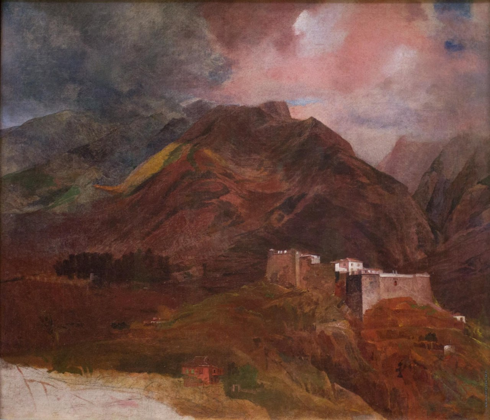

Карл Павлович Брюллов
Вид форта Пику на острове Мадейра (Неоконченная картина), 1849–1850

Холст, масло, 64 x 76,5 см
Государственная Третьяковская галерея, Москва.
Приобретено у Маргариды Лемуш Гомеш, 2003 г. Форт Пику – исторический памятник, самое мощное фортификационное сооружение на португальском острове Мадейра. Необходимость его строительства возникла в XVI веке, когда остров стал подвергаться грабительским нападениям пиратов. Вид форта Пику относится к позднему периоду творчества Карла Брюллова. Являясь ярким примером романтического пейзажа, полотно отражает чувственное восприятие природы, ощущение ее внутренней, духовной связи с человеком. Композиция произведения сложна пространственно и живописно. В колорите определяющую роль играет бурый цвет, точно передающий тон почвы острова. Мрачные крутые склоны гор, заполняющие почти весь холст, словно «наступают» друг на друга, поднимаются ввысь и уходят вершинами в тяжелые сумеречные облака. Вместе с тем справа вверху художник делает «прорыв» в открытое светлое пространство розовеющего закатного неба. Брюллов использует романтический мотив двойного освещения, эффект борьбы света и тьмы. В полотне выражена идея господства стихийных сил природы над временем и жизнью человека, нередко встречаемая в творчестве художников и поэтов-романтиков. История бытования картины восходит к первому владельцу – доктору Антониу Алвешу да Силва (1822–1854), который был лечащим врачом К.П. Брюллова на Мадейре. После его смерти пейзаж перешел к младшему брату – Жуау Фортунату де Оливейра (ум. в 1878). Дочь последнего, Элена де Оливейра, в 1958 году подарила пейзаж доктору Жуау Лемушу Гомешу (1906–1996), далее его унаследовала Маргарита Лемуш Гомеш. В 2000 году произведение было исследовано ведущими специалистами Третьяковской галереи О. Алленовой и И. Ломизе, подтвердившими авторство К. Брюллова, и спустя три года пополнило собрание музея. Среди множества гравюр, изображающих форт Пику, есть одна, близкая по композиции к работе Брюллова (литография Вильяма Весталла по рисунку Джеймса Булвера). Известна небольшая акварель Брюллова «Пейзаж на острове Мадейра» (1850, Русский музей), изображающая панораму окруженного горами города Фуншала с господствующей над ним крепостью Пику. Картина является единственным из известных на сегодня «чистым» пейзажем К.П. Брюллова, исполненным в технике масляной живописи, а потому уникальным произведением этого великого мастера.